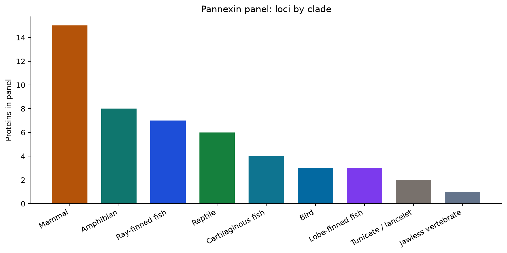
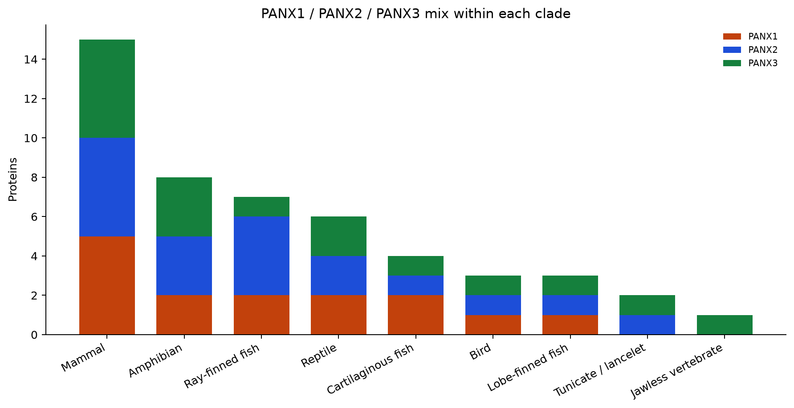
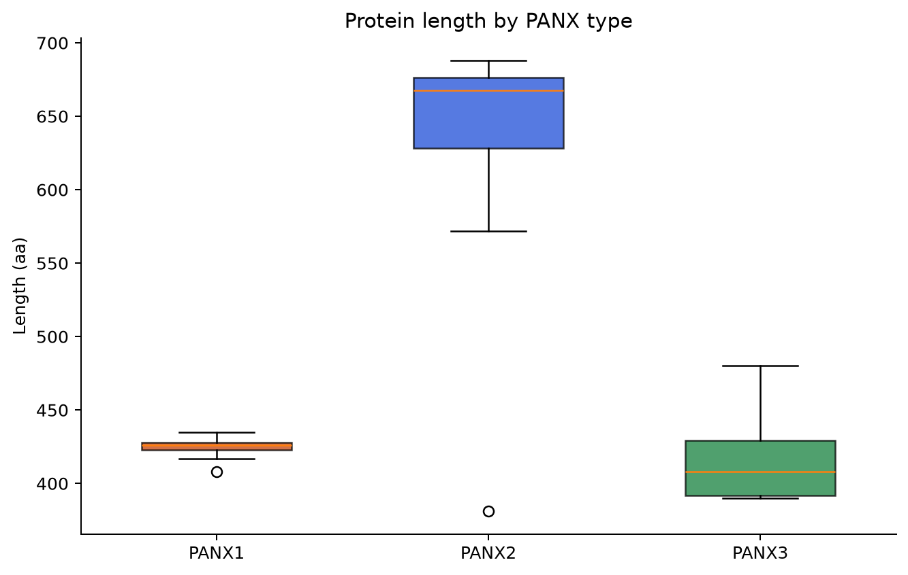
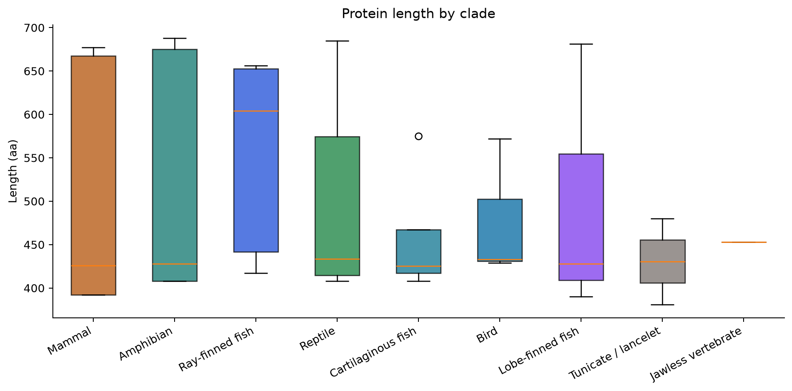
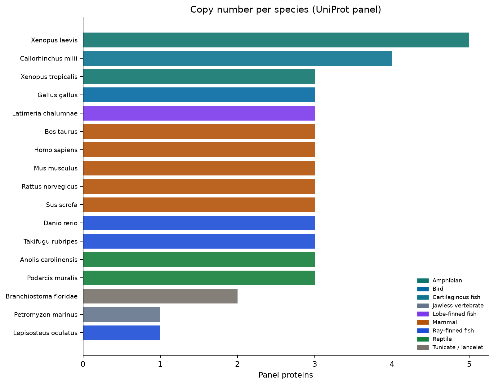
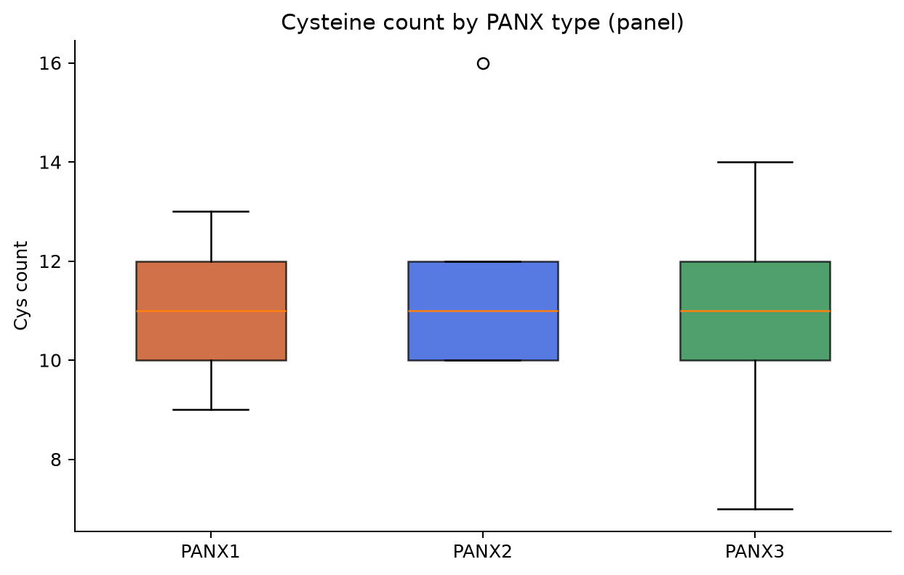

49panel proteins
17species
9clade bins
3type labels
Key results
- Curated UniProt panel: 49 pannexin proteins in 17 species across 9 clade bins.
- Type mix: PANX1=15, PANX2=18, PANX3=16.
- 12/17 panel species carry at least one named PANX1, PANX2 and PANX3.
- Bottleneck species Branchiostoma floridae: 2 panel protein(s) (PANX2:1, PANX3:1).
- Bottleneck species Petromyzon marinus: 1 panel protein(s) (PANX3:1).
- Median length PANX1: 426 aa (n=15).
- Median length PANX2: 668 aa (n=18).
- Median length PANX3: 408 aa (n=16).
- Ciona intestinalis: UniProt/NCBI status=related, panel proteins=0 (expect innexin, not pannexin).
- Orthology caveat: LOC / weak UniProt labels (lancelet, lamprey) are best-effort types — confirm with the pannexin phylogeny page.
Types come from UniProt gene / description labels via the same PANX1–3 classifier used in the panel builder. Weak LOC names (lancelet, lamprey) need the phylogeny page for a second look.
Diagrams

Clade × type heatmap

Type mix within clades

Length by PANX type

Length by clade

Copy number per species

Lancelet / lamprey bottleneck check

Cys count by type
Clade summary
| Clade | Loci | Species | PANX1 | PANX2 | PANX3 | other | Median aa |
|---|---|---|---|---|---|---|---|
| Mammal | 15 | 5 | 5 | 5 | 5 | 0 | 426 |
| Amphibian | 8 | 2 | 2 | 3 | 3 | 0 | 428 |
| Ray-finned fish | 7 | 3 | 2 | 4 | 1 | 0 | 604 |
| Reptile | 6 | 2 | 2 | 2 | 2 | 0 | 434 |
| Cartilaginous fish | 4 | 1 | 2 | 1 | 1 | 0 | 426 |
| Bird | 3 | 1 | 1 | 1 | 1 | 0 | 433 |
| Lobe-finned fish | 3 | 1 | 1 | 1 | 1 | 0 | 428 |
| Tunicate / lancelet | 2 | 1 | 0 | 1 | 1 | 0 | 430 |
| Jawless vertebrate | 1 | 1 | 0 | 0 | 1 | 0 | 453 |
Copy number (bottleneck automation)
Per-species PANX1/2/3 counts. Early-chordate rows are flagged for the literature bottleneck check.
| Species | Clade | n | 1/2/3 | full triplet? | bottleneck? |
|---|---|---|---|---|---|
| Xenopus laevis | Amphibian | 5 | 1/2/2 | yes | no |
| Xenopus tropicalis | Amphibian | 3 | 1/1/1 | yes | no |
| Gallus gallus | Bird | 3 | 1/1/1 | yes | no |
| Callorhinchus milii | Cartilaginous fish | 4 | 2/1/1 | yes | no |
| Petromyzon marinus | Jawless vertebrate | 1 | 0/0/1 | no | yes |
| Latimeria chalumnae | Lobe-finned fish | 3 | 1/1/1 | yes | no |
| Bos taurus | Mammal | 3 | 1/1/1 | yes | no |
| Homo sapiens | Mammal | 3 | 1/1/1 | yes | no |
| Mus musculus | Mammal | 3 | 1/1/1 | yes | no |
| Rattus norvegicus | Mammal | 3 | 1/1/1 | yes | no |
| Sus scrofa | Mammal | 3 | 1/1/1 | yes | no |
| Danio rerio | Ray-finned fish | 3 | 2/1/0 | no | no |
| Lepisosteus oculatus | Ray-finned fish | 1 | 0/1/0 | no | no |
| Takifugu rubripes | Ray-finned fish | 3 | 0/2/1 | no | no |
| Anolis carolinensis | Reptile | 3 | 1/1/1 | yes | no |
| Podarcis muralis | Reptile | 3 | 1/1/1 | yes | no |
| Branchiostoma floridae | Tunicate / lancelet | 2 | 0/1/1 | no | yes |